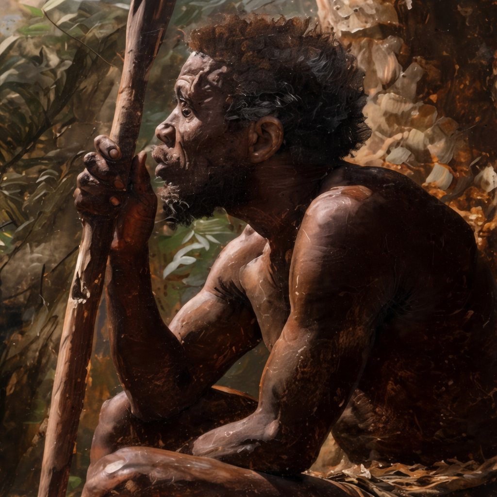
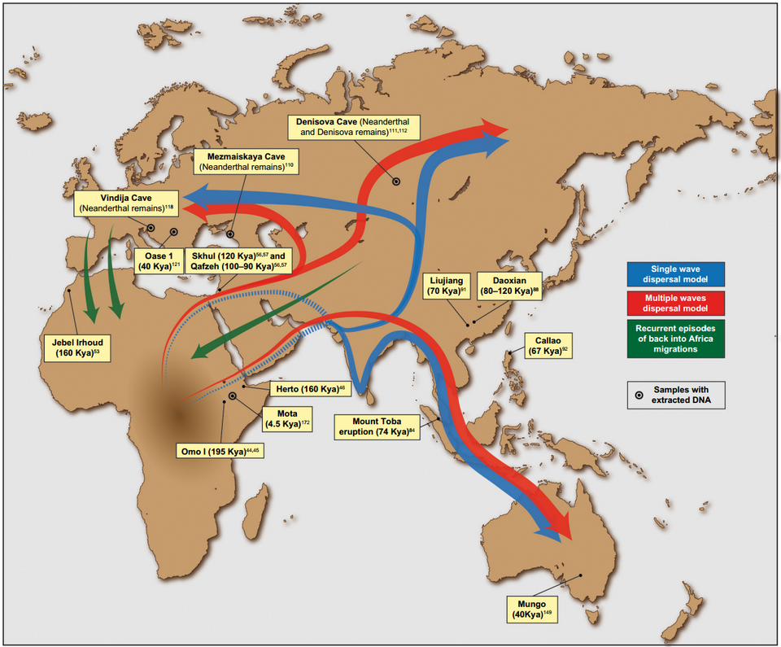
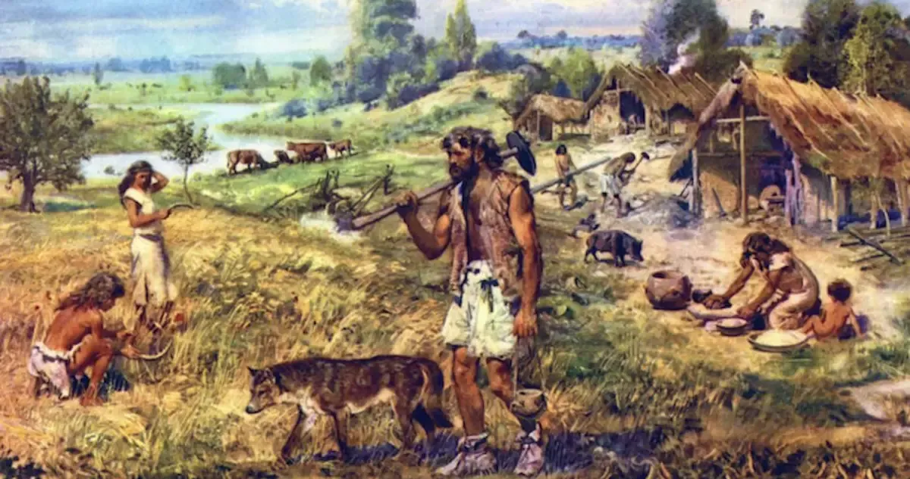

| Middle Paleolithic | Homo Sapien Out of Africa Migrations |
Upper Paleolithic | Neolithic |
|---|---|---|---|
| 300-70kya | 70-50kya | 50-10kya | 10kya-4000 BCE |
|  The first anatomically modern homo sapiens emerge in Africa(likely the land of modern day Ethiopia). Humans start with tools and diet more similar to other contemporary hominins until gradual advancement in technological diversity. Fire, shelter and small scale societies started becoming widespread. By around 200-100 kya several early migrations occurred outside of Africa to the Levant, though these were relatively small in scale compared to later and earlier major migrations. During this time, mixing with other archaic hominids, particularly Neanderthals and Denisovans occured. |
 Likely due to environmental changes, the first major migrationfor Homo Sapiens occured from East Africa, with a group of bottlenecked humans (possibly fewer than 1000) crossing the 'Gate of Tears' (Bab-el-Mandeb).This led to groups spreading across Southern Arabia, South/Southeast Asia and to Australia in coming years. Other migrations took place across the Levant to Europe and the Fertile Crescent and Homo Sapiens began spreading out globally. |
 During the Upper Paleolithic Period, other
During the Upper Paleolithic Period, other humans began declining and Homo Sapiens began its rise as the dominant subspecies. Technological advancement continued and the last Neanderthals and Denisovans went extinct around 30-50k years ago, possibly linked to competition, climate change, low population density and population absorption. Some populations expanded into the Americas, resulting in even further human exploration. Some small settlements were recorded during this time. |
 After the end of the last Ice Age,the climate became favourable for technological and societal growth across multiple regions, each relatively independent from one another. The agricultural/neolithic revolution resulted in the shift of humans from nomadic hunter gatherer lifestyles to settled lifestyles, including farming, domestication and larger scale settlements (villages). Food surplus led to immense population growth and labour specialisation, resulting in social hierarchies and proto civilisations. |